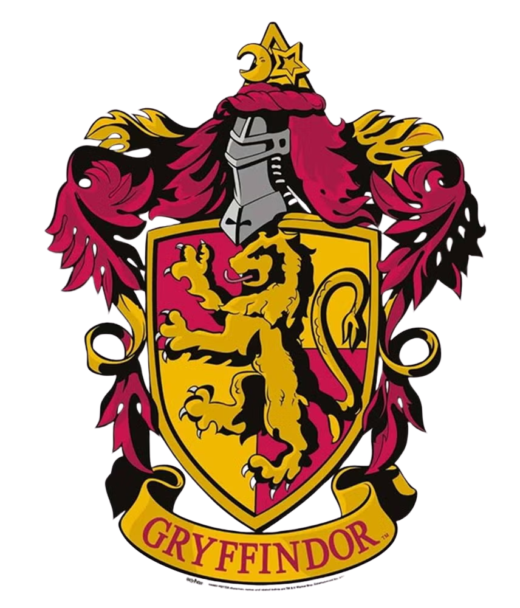
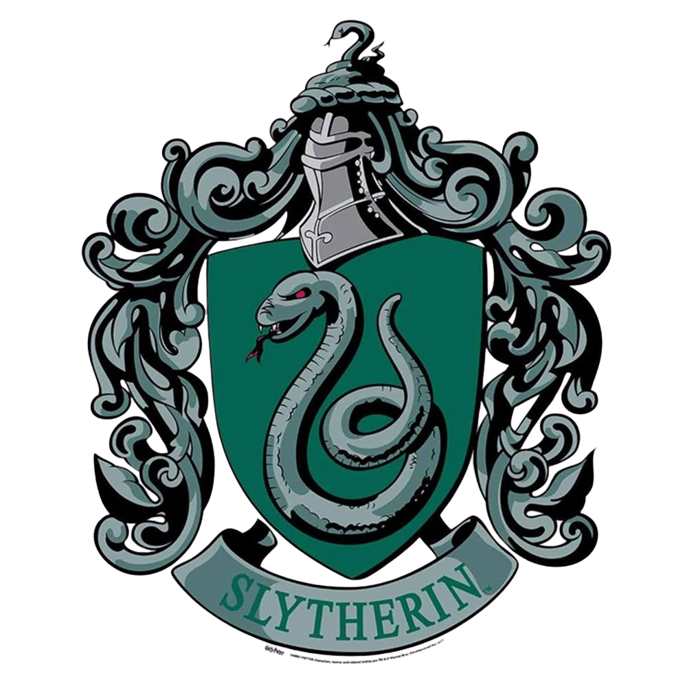
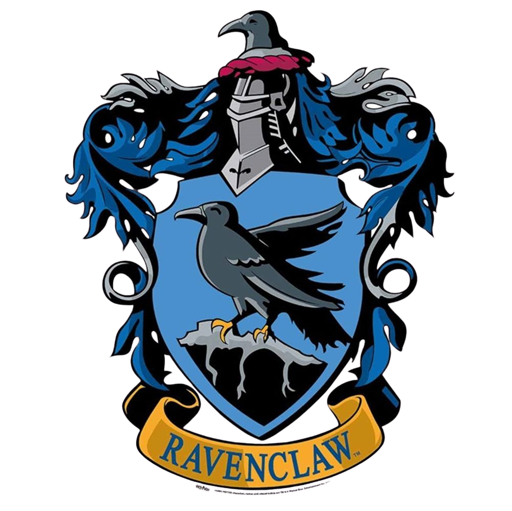

Casas
En esta sección podras encontrar todo lo que necesitas saber sobre nuestras casas..
Gryffindor
La casa de los valientes y decididos.
- Fundada por Godric Gryffindor.
- Sus colores son el escarlata y el dorado.
- Esta representada por un león y su fantasma es Sir Nicholas de-Mimsy Porpington, también conocido como Nick casi decapitado.
- Su sala común está situada en una torre en el séptimo piso escondido detrás de un portaretrato de La Dama Gorda.

Slytherin
Conocida por su astucia, ambición y liderazgo. Fundada por Salazar Slytherin.
- Fundada por Salazar Slytherin.
- Sus colores son el verde y el plateado.
- Esta representada por una serpiente y su fantasma es el barón sanguinario.
- Su sala común está en las mazmorras debajo del lago.

Hufflepuff
Los leales y trabajadores. Fundada por Helga Hufflepuff.
- Fundada por Helga Hufflepuff.
- Sus colores son el amarillo y el negro.
- Esta representada por un tejón y su fantasma es el fraile gordo.
- La entrada a la sala común está situada debajo de las escaleras cerca de la cocina.
Ravenclaw
La casa de la inteligencia y la creatividad. Fundada por Rowena Ravenclaw.
- Fundada por Rowena Ravenclaw.
- Sus colores son el azul y el bronce.
- Esta representada por un aguila y su fantasma es Helena Ravenclaw, hija de Rowena.
- La entrada a la sala común está situada en una torre alta en el séptimo piso.
